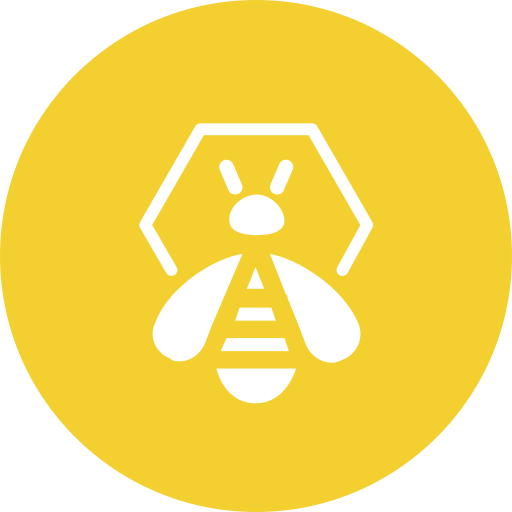
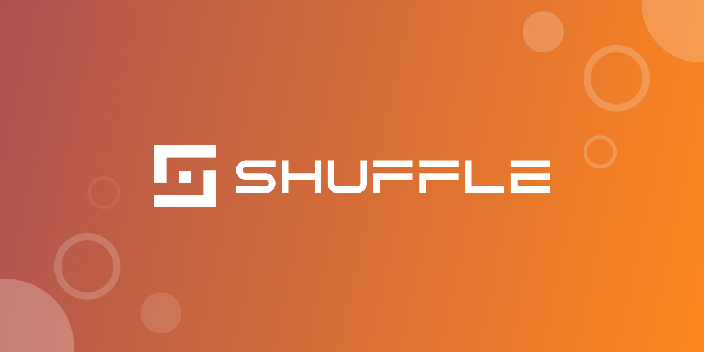
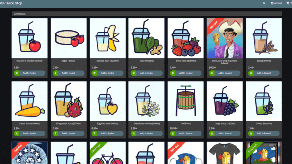

Detect
Wazuh, Elastic, Kibana, Logstash, Filebeat, and Metricbeat collect and analyze security events.
Developed by JOJIN JOHN
A Docker-based blue-team lab for Wazuh, Elastic, TheHive, Cortex, MISP, Shuffle, monitoring, vulnerable targets, and optional Linux packet capture.
SOC Lab is a self-contained environment for learning security monitoring, log analysis, detection engineering, incident response, threat intelligence, SOAR automation, and controlled attack simulation.
Wazuh, Elastic, Kibana, Logstash, Filebeat, and Metricbeat collect and analyze security events.
TheHive, Cortex, and Shuffle help turn alerts into cases, enrichment, and automation workflows.
DVWA and Juice Shop provide safe local targets for testing alerts and dashboards.
Each tool runs as a Docker container. Click Open Dashboard after starting the lab.
Centralized security monitoring with log analysis, FIM, threat detection, active response, and endpoint agent management across the lab.
Open Dashboard →

Scalable 4-in-1 incident response platform. Manage security cases, alerts, tasks, and observables with Cortex automated analysis.
Open Dashboard →Malware Information Sharing Platform for gathering, correlating, and sharing threat indicators, threat actors, and IOCs across teams.
Open Dashboard →Open-source SOAR for building automated playbooks — connect Wazuh alerts to TheHive cases, MISP enrichments, and response actions.
Open Dashboard →
Damn Vulnerable Web Application — intentionally vulnerable PHP/MySQL app for practicing SQL injection, XSS, CSRF, and command injection.
Open Dashboard →
Modern vulnerable Node.js e-commerce app with 100+ OWASP challenges — SQL injection, XSS, broken auth, IDOR tracked on a scoreboard.
Open Dashboard →

High-performance multi-threaded IDS/IPS engine that inspects live network traffic for threats, protocol anomalies, and rule violations.
Integrated Engine — Logs via Wazuh
Network IDS — No Direct UI
Grafana dashboards visualizing Prometheus container metrics — CPU, memory, network I/O, and health checks across all running lab services.
Open Dashboard →Download only the essential configuration templates, setup scripts, and docker-compose files to start in 5 seconds.
Download soc-lab-release.zipgit clone https://github.com/jojin1709/SOC-LAB.git
cd SOC-LABpowershell -ExecutionPolicy Bypass -File .\scripts\setup.ps1This automatically configures the environment and starts only the lightweight Control Center. Open http://localhost:8088 to manage your labs.
chmod +x scripts/*.sh
sudo sysctl -w vm.max_map_count=262144
./scripts/setup.shInitializes directories and launches the Control Center. Open http://localhost:8088 to manage your labs.
| Service | Purpose | URL |
|---|---|---|
| Control Center | Web-based lab manager portal | http://localhost:8088 |
| Docs | Documentation website | http://localhost:8090 |
| Kibana | Elastic dashboards | http://localhost:5601 |
| Wazuh | SIEM/XDR UI | https://localhost:4431 |
| TheHive | Incident response | http://localhost:9000 |
| Cortex | Observable analysis | http://localhost:9001 |
| MISP | Threat intelligence | https://localhost:8443 |
| Shuffle (Backend API) | SOAR automation backend | http://localhost:5001 |
| Shuffle (Frontend UI) | SOAR UI | http://localhost:3001 |
| Grafana | Metrics dashboards | http://localhost:3000 |
| Prometheus | Metrics collection | http://localhost:9090 |
| MinIO | Object storage | http://localhost:9002 |
| DVWA | Vulnerable target | http://localhost:8080 |
| Juice Shop | Vulnerable target | http://localhost:3002 |
docker compose up -d control-center
docker compose logs -f control-center
docker compose stop control-center
docker compose down -vdocker compose ps
docker compose logs -f
docker compose logs -f wazuh-manager
docker compose config --quietchmod +x scripts/ingest_test_data.sh
./scripts/ingest_test_data.shdocker compose restart wazuh-manager
docker compose logs --tail=100 wazuh-managerdocker infoStart Docker Desktop on Windows or the Docker service on Linux/Kali.
sudo sysctl -w vm.max_map_count=262144Elasticsearch and Wazuh indexer need this setting on Linux hosts.
docker compose ps
netstat -ano | findstr :443Change ports in .env if another local service is already using them.
docker compose down -v
docker compose pull
docker compose up -dThis deletes lab data and starts fresh.
Built by JOJIN JOHN. Connect on LinkedIn or support the project below.
https://www.linkedin.com/in/jojin-john/